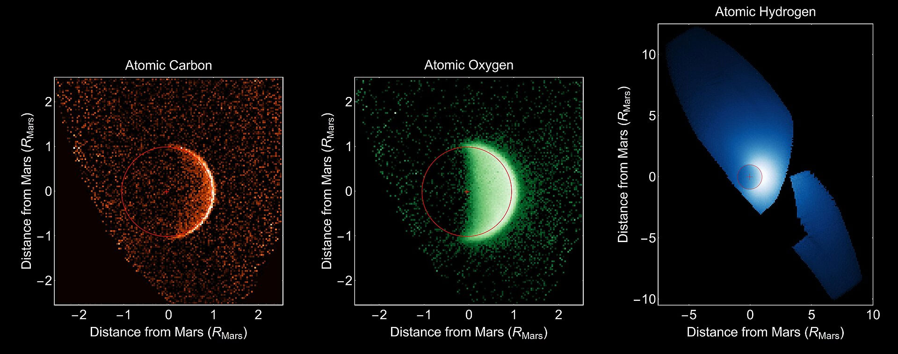

Atmosphere of Mars
Mars lost its magnetosphere 4 billion years ago, possibly because of numerous asteroid strikes, so the solar wind interacts directly with the Martian ionosphere, lowering the atmospheric density by stripping away atoms from the outer layer. Both Mars Global Surveyor and Mars Express have detected ionized atmospheric particles trailing off into space behind Mars, and this atmospheric loss is being studied by the MAVEN orbiter. Compared to Earth, the atmosphere of Mars is quite rarefied. Atmospheric pressure on the surface today ranges from a low of 30 Pa (0.0044 psi) on Olympus Mons to over 1,155 Pa (0.1675 psi) in Hellas Planitia, with a mean pressure at the surface level of 600 Pa (0.087 psi). The highest atmospheric density on Mars is equal to that found 35 kilometres (22 mi) above Earth's surface. The resulting mean surface pressure is only 0.6% of Earth's 101.3 kPa (14.69 psi). The scale height of the atmosphere is about 10.8 kilometres (6.7 mi), which is higher than Earth's 6 kilometres (3.7 mi), because the surface gravity of Mars is only about 38% of Earth's.
The atmosphere of Mars consists of about 96% carbon dioxide, 1.93% argon and 1.89% nitrogen along with traces of oxygen and water. The atmosphere is quite dusty, containing particulates about 1.5 μm in diameter which give the Martian sky a tawny color when seen from the surface. It may take on a pink hue due to iron oxide particles suspended in it. The concentration of methane in the Martian atmosphere fluctuates from about 0.24 ppb during the northern winter to about 0.65 ppb during the summer. Estimates of its lifetime range from 0.6 to 4 years, so its presence indicates that an active source of the gas must be present. Methane could be produced by non-biological process such as serpentinization involving water, carbon dioxide, and the mineral olivine, which is known to be common on Mars, or by Martian life.
Compared to Earth, its higher concentration of atmospheric CO2 and lower surface pressure may be why sound is attenuated more on Mars, where natural sources are rare apart from the wind. Using acoustic recordings collected by the Perseverance rover, researchers concluded that the speed of sound there is approximately 240 m/s for frequencies below 240 Hz, and 250 m/s for those above.
Auroras have been detected on Mars. Because Mars lacks a global magnetic field, the types and distribution of auroras there differ from those on Earth; rather than being mostly restricted to polar regions as is the case on Earth, a Martian aurora can encompass the planet. In September 2017, NASA reported radiation levels on the surface of the planet Mars were temporarily doubled, and were associated with an aurora 25 times brighter than any observed earlier, due to a massive, and unexpected, solar storm in the middle of the month.